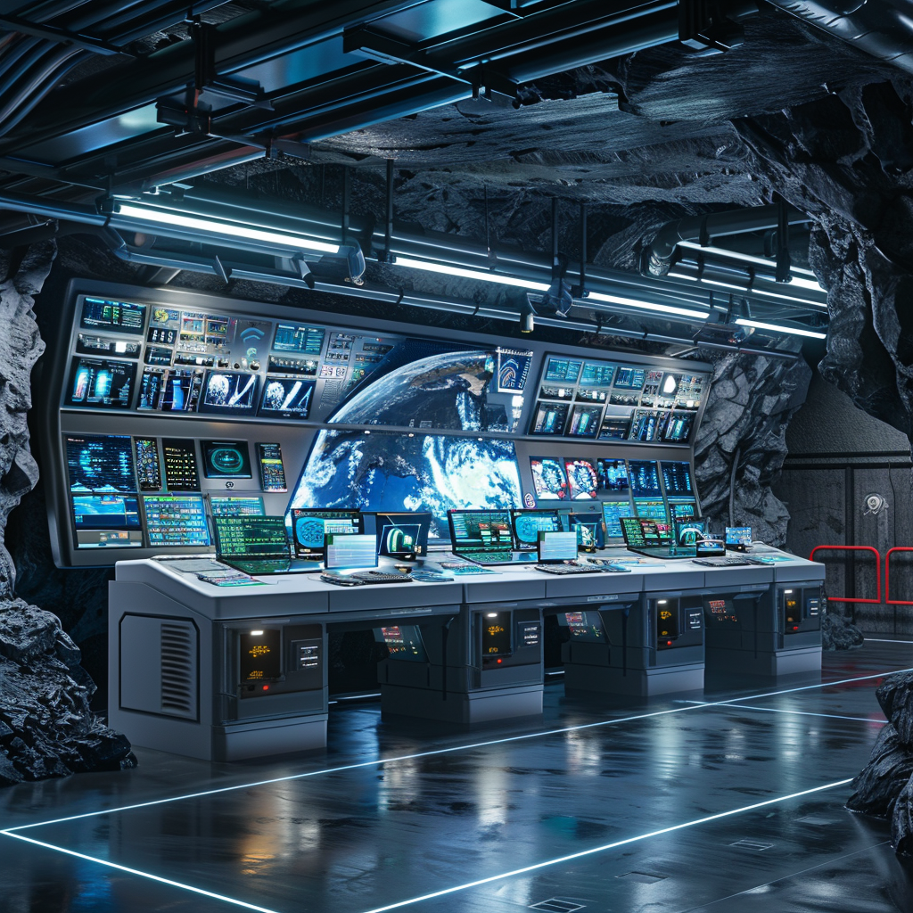

Control and Monitoring

IoT Monitoring Systems
- Real-time sensors: Continuous monitoring of water quality and storage levels to alert the crew to any issues before they become critical.
- Centralized control room: System management with automated controls for efficient management of all habitat systems, from water and power to environmental controls.